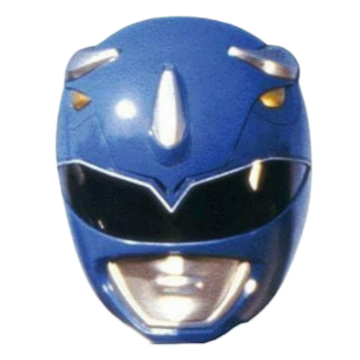
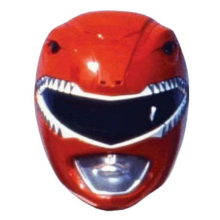
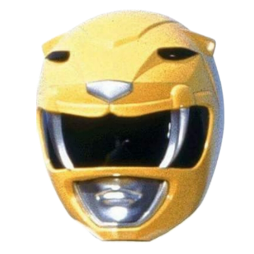
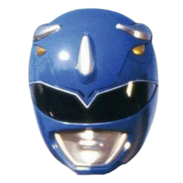
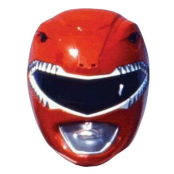
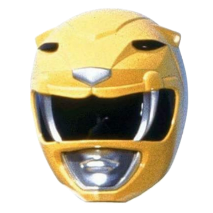

GitHub as a team sport
NHS RPySOC 2024
22 November 2024
tl;dr
- GitHub organises code
- GitHub can help organise people
- We’re learning as we go

The Data Science Team


   
  
- Expanding to 8, all remote
- Complex New Hospital Programme (NHP)
- How should we work together?
Division of labour
- The ‘scrum master’
- Owners and deputies (CODEOWNERS)
- Issue and pull-request assignees

The bottom line, actually

- Communicate
- Help each other
- Be kind